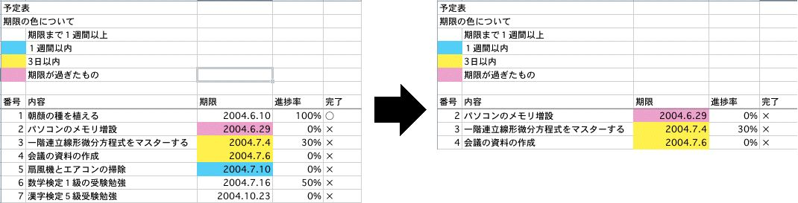

あるセル範囲（単一、一列のみ）のセルの塗りつぶしの色を調べます。そして、あるセルの塗りつぶしの色が、あらかじめ選択された色でなかった場合、その セルが含まれる行全体を非表示、又は削除します。

マクロを実行前と実行後の画面
C列に条件付き書式を使って色を付け、ピンクと黄色のセルを表示した。
Excelには、ある特定の条件に一致する行を抽出する機能として[データ]メニューの[フィルタ]の[オートフィルタ]がありますが、ここでは、それ との違いをあげます。
※このアドインの作成者が独自に調査したものです。（条件の自由度、実行スピード、操作性に関しては、作成者の考えによるものです。）
条件付き書式＋アドイン オートフィルタ 条件の自由度 ○ △ 実行スピード △ ○ 操作性 × ○ [元に戻す]、[繰り返す]、[やり直し]の使用 × × 非表示になった行を含む範囲を選択し、コピーしたとき 非表示になったセルもコピーされます（可視セルのみをコピーする場合はExcelのヘルプの『可 視セルだけをコピーする』を参照してください。） 可視セルのみコピーされます